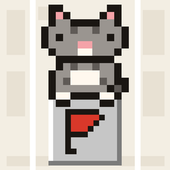

칸칸 출시 준비 중
오늘 들를 곳을 지도에 한 칸씩 담고, 고양이랑 천천히 따라 걷는 하루 동선 지도. 걸어가는 길을 따라오고, 들른 곳은 조용히 표시해 둡니다.
소요(SOYO)는 일상을 조금 덜 바쁘게 만드는 모바일 앱과 디지털 콘텐츠를 만드는 작은 스튜디오입니다. 서두르게 하지 않고, 점수 매기지 않고, 필요한 만큼만 묻는 앱을 지향합니다.
이름도, 연락처도 묻지 않습니다. 앱을 여는 순간 바로 쓸 수 있게 만듭니다.
기능에 꼭 필요한 정보만 다루고, 어디로 가는지 개인정보처리방침에 빠짐없이 적습니다.
마감, 점수, 알림 폭탄 없이. 쓰는 사람의 속도에 맞춥니다.
앱 사용 중 불편한 점이나 제안은 메일로 보내 주세요. 영업일 기준 3일 안에 답장드립니다.